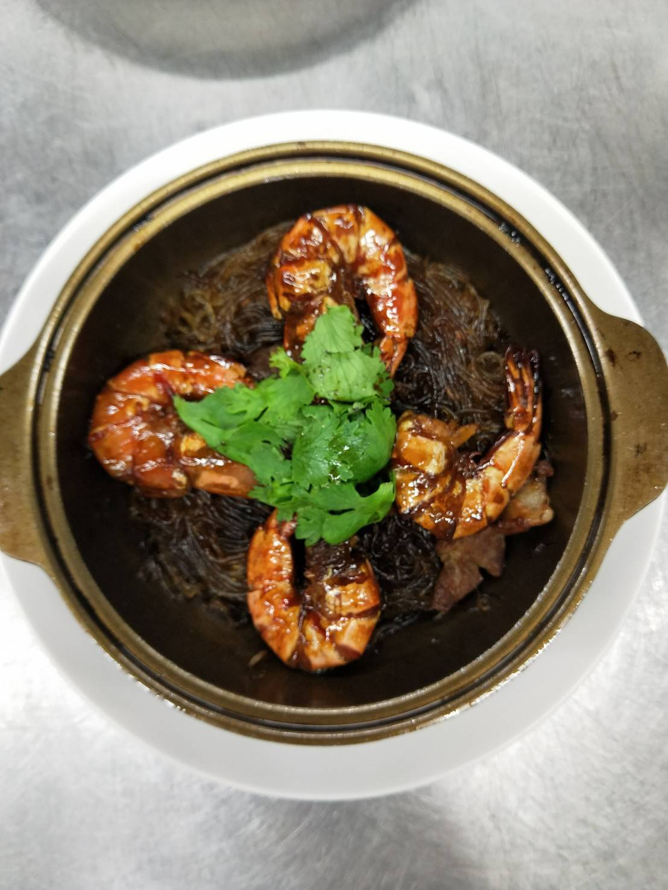

蒜頭去蒂切片，五花肉切片，蝦子平剪頭，剪前腳後腳，背部切刀開背，腸泥取出洗淨，
（花椒水：75g花椒.75黑胡椒粒.水六斤）（炒明蝦：醬油膏兩大匙，醬油一匙，糖一大匙，
雞粉1/2匙，奶油20g，水150g，老抽一匙）
（冬粉：花椒水200g，水200，醬油1.5大匙，糖一大匙，雞粉1/2匙，老抽一匙）
肉醃製：醬油一匙
熱鍋，兩大匙油炸蒜片，拌炒肉炒熟，
冬粉：調味全下，冬粉剪段，倒上冬粉
熱鍋炒蝦，關火放蝦子，（約15秒）
煮蝦子的料，再放塊奶油，熱砂鍋起鍋滴香油，蒜頭跟肉拌炒，冬粉瀝乾拌炒，蝦子鋪上層最後放上香菜。

紅燒蝦仁羹
蔥油全雞
桂花炒三絲
心得